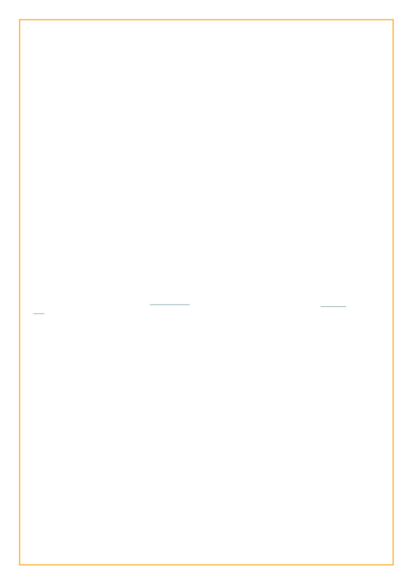

Season IX
2014-03-10 - students sit in circles,
where they can find room amid the computers
that sit atop every desk. Upon arriving at class
they’d been told to go outside and write a
description of a random stranger, as practice
writing character descriptions. Now they
discuss their findings. This fairly overweight
fellow is explaining, somewhat smugly, what
you can learn about someone from their
appearance, as if he’s a god-damn master of
CSI or something. He’s wearing a light blue
shirt with a big picture of a wolf’s face on it.
“For example, if their backpack is
loaded with books, they’re probably a full-time
student. If they’ve only got a a book or two and
a notebook, they probably aren’t.” He repeated
this again a little later and shared it with the
class as if it were some great wisdom. I look at
my desk, all I have is the book for the class and
an old blue binder that also contains diagrams
on sail theory and charts and tables for
navigation.
“And you can look at their hands and
determine whether they work with their hands
like they do construction, or maybe they just
work at a desk,” Mr Sleuth continues. “And if
they are wearing flip-flops maybe they live by
the beach.” Someone hire this guy as a private
eye. This is Southern California,
who doesn’t wear flip-flops?
I look at my hands, I’m not so sure he’d
get a right answer about me from my hands,
we’re not all caricatures of what we do. I look
at my glossy black boots and wonder what he’d
say about me if he didn’t already know the
answers. But this whole thing got me thinking.
We almost never describe ourselves the same
way we describe other characters. In their
introductions, people usually come out
shooting with their relationships, their age,
their jobs, but that’s not how we’d ever dream
of first describing a character in a story. Is it
simply because the view from within is
different, or because we all recognize we are
inherently biased about ourselves, or because
we realize anything we say about ourselves will
inevitably be critically analyzed by the readers
as “thats what they WANT us to think about
them.” We say something complimentary, it
looks like we’re being self-aggrandizing. We
say something negative, it looks like we’re
fishing for sympathy. It got me really
wondering, if I were a character in someone
else’s story, how would they describe me?
So let’s say you’re sitting in this class
looking at the fellow with glossy black combat
boots. If our perspective is “3rd person limited”
and we don’t know any backstory, we might say
we see a lanky fellow wearing sturdy olive-
colored carhartt pants, held up by black
suspenders over a black t-shirt with some sort
of sailing vessel on it. On his right wrist there
appears to be a bracelet woven of some kind of
coarse yarn. On his left there’s a bracelet of
orange clay beads and a rolex with a blue band.
Closer inspection may reveal that the face of
the rolex is somewhat rusted. He’s probably not
doing a great job of pretending to be impressed
with our classmate’s detective skills, but doesn’t
bother saying anything about it. He’s busy
wondering what the connotation of the boots
and suspenders would be deemed to be.
He looks at the turkshead he wove on his right
wrist and thinks of the numerous times he’s
been singled out in public places by fellow
sailors because they recognized it,
confidentially sidling up to him while nodding
at the turkshead, asking “what ship you from?”
or simply passing with a wink and gesture to
their own turksheaded wrist.
The orange clay bracelet probably
looks like just some silly thing to his classmate,
but it harkens back to a ceremony in the city of
Ibadan, in the southwest of Nigeria. One hot
humid February day, there he was, dressed up
in African robes, with some kind of plant
shoved ceremonially under his hat, and the
council of traditional chieftains all around him,
it’s all a bit of a blur now but there was some
drumming and some speeches and in the end
there was a plaque conferring the title of
“Chieftain Soyindaro,” and the presentation of
a necklace of orange clay beads and
accompanying bracelet. At first he thought it
was a bit silly himself, but soon he found that
everywhere in Nigeria he went while wearing
the beads people called him “chief” and treated
him with respect. Once an armed and
uniformed soldier in the airport was about to
insist on going through all his stuff until he saw
the beads.
He remembers the beautiful princess
Nwaji, whose father is a king near Port
Harcourt, languidly sliding her rolex off her
brown arm and giving it to him, in the quiet of
his hotel room in Abuja. Despite her gold
adornments, he always suspected it was fake,
this is Nigeria after all, but you never know.
Either way he should have perhaps been more
careful of it, shouldn’t have been wearing it
 LiveJournal
LiveJournal Dreamwidth
Dreamwidth